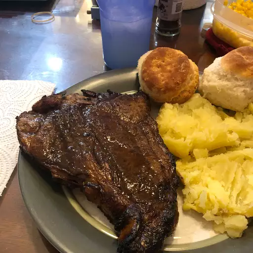

Description
Steak is easy to mess up, but easy to get right. Don't overthink this, it's really not that hard.
If you have a good piece of meat, you don't need much else, and sure those things can be nice, but sometimes it takes away from the beauty of the piece of meat. I'd reccomend getting a quality piece of steak, we're talking nice and red, not a ton of fat, although we do want some for flavor, and some Kosher salt, and I'd preffer to grind it directly. We are looking for a bit of bigger pieces to give more flavor.
Okay, there's a few key things to remember here.
- Let the steak come to room temperature
- Dry it quite thouroughly with paper towels
- Add just a little more salt than you think is appropriate, trust me, you don't want to under-salt this steak.
Pre-heat the oven to 350deg F.
Let your pan get sizzling hot. This is not something that wants to heat up in the pan with the pan.
Once you put it on the heat, don't touch it.
Ingredients
- A good piece of Porterhouse Steak
- Kosher salt
- Olive oil or Butter
- optionally:
Steps
- Get your frying pan nice and hot. This should be cooked on Medium-High heat. Once you are near the desired temperature add your butter or oil
- Place the Porterhouse Steak onto the pan. The placement should be a single motion. Allow the steak to cook untouched for 2-3 minutes
- Once you have a good sear on the bottom of the steak, flip it. Let it sit.
- Wait an additional two minutes. If the steak is thick enough that the edge's have not changed color, sear those as well.
- Once the entire steak is seared it is going directly into the oven for 5-10 minutes depending on how well cooked you'd like it, and how well cooked it was when it went in the oven
- Remove from oven at desired temperature, and let rest. DO NOT SKIP THIS STEP
- Serve!
Hope you enjoy!